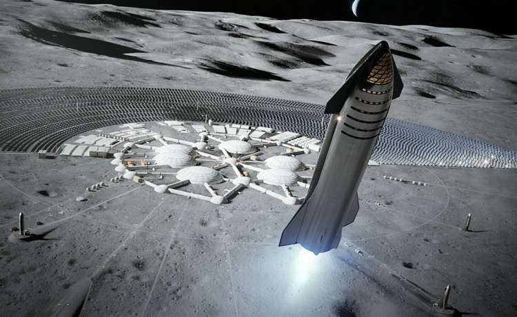
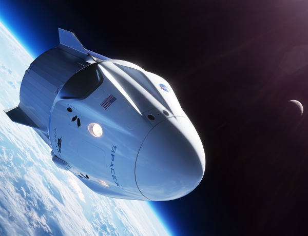

Space Exploration Technologies
Many people who aren't professional astronauts have been to orbit aboard various spacecraft, but until now they have always been accompanied by trained professionals. While the passengers on the Inspiration4 mission have undergone some training to make sure they are able to fly safely, they haven't been through the intensive, years-long process required to become an astronaut for a national space agency. The commander for the mission will be Jared Isaacman, a billionaire and pilot who paid for the flight. He donated two of the other seats to St. Jude Children's Research Hospital in Tennessee. One of those seats went to Hayley Arceneaux, a physician assistant at the hospital, and the other to Christopher Sembroski, a data engineer and US Air Force veteran who was given his seat by an unnamed friend who won the hospital's raffle. The final passenger will be Sian Proctor, a geology professor and member of the US Air Force Civil Air Patrol, who was selected to be the flight's pilot after winning a competition.
The passengers will ride to space in a Crew Dragon capsule that was previously used for for SpaceX's Crew-1 mission, the firm's first operational mission to the International Space Station (ISS) in November 2020. Almost all of the spacecraf's operations are automated, so if all goes well the crew won't have to actually steer the ship as it drifts in orbit for three days and then returns to splash down in the Atlantic Ocean.The passengers will ride to space in a Crew Dragon capsule that was previously used for for SpaceX's Crew-1 mission, the firm's first operational mission to the International Space Station (ISS) in November 2020. Almost all of the spacecraf's operations are automated, so if all goes well the crew won't have to actually steer the ship as it drifts in orbit for three days and then returns to splash down in the Atlantic Ocean.
Space Exploration Technologies Corp. (SpaceX) is an American aerospace manufacturer, space transportation services and communications company headquartered in Hawthorne, California. SpaceX was founded in 2002 by Elon Musk with the goal of reducing space transportation costs to enable the colonization of Mars. SpaceX manufactures the Falcon 9 and Falcon Heavy launch vehicles, several rocket engines, Dragon cargo, crew spacecraft and Starlink communications satellites.